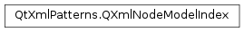

QXmlNodeModelIndex¶
Synopsis¶
Functions¶
- def
__eq__(other) - def
__ne__(other) - def
additionalData() - def
data() - def
internalPointer() - def
isNull() - def
model()
Detailed Description¶
The
PySide2.QtXmlPatterns.QXmlNodeModelIndexclass identifies a node in an XML node model subclassed fromPySide2.QtXmlPatterns.QAbstractXmlNodeModel.
PySide2.QtXmlPatterns.QXmlNodeModelIndexis an index into anXML node model. It contains:
- A pointer to an
XML node model, which is returned byPySide2.QtXmlPatterns.QXmlNodeModelIndex.model(), and- Some data, which is returned by
PySide2.QtXmlPatterns.QXmlNodeModelIndex.data(),PySide2.QtXmlPatterns.QXmlNodeModelIndex.internalPointer(), andPySide2.QtXmlPatterns.QXmlNodeModelIndex.additionalData().Because
PySide2.QtXmlPatterns.QXmlNodeModelIndexis intentionally a simple class, it doesn’t have member functions for accessing the properties of nodes. For example, it doesn’t have functions for getting a node’s name or its list of attributes or child nodes. If you find that you need to retrieve this kind of information from your query results, there are two ways to proceed.
- Send the output of your XQuery to an XML receiver, or
- Let your XQuery do all the work to produce the desired result.
The second case is explained by example. Suppose you want to populate a list widget with the values of certain attributes from a set of result elements. You could write an XQuery to return the set of elements, and then you would write the code to iterate over the result elements, get their attributes, and extract the desired string values. But the simpler way is to just augment your XQuery to finding the desired attribute values. Then all you have to do is evaluate the XQuery using the version of
QXmlQuery.evaluateTo()that populates aPySide2.QtCore.QStringList, which you can send directly to your widget.
PySide2.QtXmlPatterns.QXmlNodeModelIndexdoesn’t impose any restrictions on thedatavalue anPySide2.QtXmlPatterns.QXmlNodeModelIndexshould contain. The meaning of the data left to the associatednode model. BecausePySide2.QtXmlPatterns.QXmlNodeModelIndexdepends on a particular subclass ofPySide2.QtXmlPatterns.QAbstractXmlNodeModelfor its existence, the only way you can create an instance ofPySide2.QtXmlPatterns.QXmlNodeModelIndexis by asking the node model to create one for you withQAbstractXmlNodeModel.createIndex(). Since that function is protected, it is usually a good idea to write a public function that creates aPySide2.QtXmlPatterns.QXmlNodeModelIndexfrom arguments that are appropriate for your particular node model.A default constructed node index is said to be null, i.e.,
PySide2.QtXmlPatterns.QXmlNodeModelIndex.isNull()returns true.
PySide2.QtXmlPatterns.QXmlNodeModelIndexandPySide2.QtXmlPatterns.QAbstractXmlNodeModelfollow the same design pattern used forPySide2.QtCore.QModelIndexandPySide2.QtCore.QAbstractItemModel.
-
class
PySide2.QtXmlPatterns.QXmlNodeModelIndex¶ -
class
PySide2.QtXmlPatterns.QXmlNodeModelIndex(other) Parameters: other – PySide2.QtXmlPatterns.QXmlNodeModelIndexDefault constructor. Creates an item that is
null.Standard copy constructor. Creates a
PySide2.QtXmlPatterns.QXmlNodeModelIndexinstance that is a copy ofother.
-
PySide2.QtXmlPatterns.QXmlNodeModelIndex.Constants¶ Constant Description QXmlNodeModelIndex.ForwardAxis All forward axes include this flag. QXmlNodeModelIndex.ReverseAxis All reverse axes include this flag.
-
PySide2.QtXmlPatterns.QXmlNodeModelIndex.NodeKind¶ Identifies a kind of node.
Constant Description QXmlNodeModelIndex.Attribute Identifies an attribute node QXmlNodeModelIndex.Text Identifies a text node QXmlNodeModelIndex.Comment Identifies a comment node QXmlNodeModelIndex.Document Identifies a document node QXmlNodeModelIndex.Element Identifies an element node QXmlNodeModelIndex.Namespace Identifies a namespace node QXmlNodeModelIndex.ProcessingInstruction Identifies a processing instruction. Note that the optional XML declaration at very beginning of the XML document is not a processing instruction
See also
-
PySide2.QtXmlPatterns.QXmlNodeModelIndex.DocumentOrder¶ Identifies the specific node comparison operator that should be used.
Constant Description QXmlNodeModelIndex.Precedes Signifies the \<\<operator. Test whether the first operand precedes the second in the document.QXmlNodeModelIndex.Follows Signifies the \>\>operator. Test whether the first operand follows the second in the document.QXmlNodeModelIndex.Is Signifies the isoperator. Test whether two nodes have the same node identity.
-
PySide2.QtXmlPatterns.QXmlNodeModelIndex.additionalData()¶ Return type: PySide2.QtCore.qint64Returns the second data value. The node index holds two data values.
PySide2.QtXmlPatterns.QXmlNodeModelIndex.data()returns the first one.
-
PySide2.QtXmlPatterns.QXmlNodeModelIndex.data()¶ Return type: PySide2.QtCore.qint64Returns the first data value. The node index holds two data values.
PySide2.QtXmlPatterns.QXmlNodeModelIndex.additionalData()returns the second one.
-
PySide2.QtXmlPatterns.QXmlNodeModelIndex.internalPointer()¶ Return type: voidReturns the first data value as a void* pointer.
-
PySide2.QtXmlPatterns.QXmlNodeModelIndex.isNull()¶ Return type: PySide2.QtCore.boolReturns true if this
PySide2.QtXmlPatterns.QXmlNodeModelIndexis a default constructed value, otherwise false.A null
PySide2.QtXmlPatterns.QXmlNodeModelIndexdoesn’t represent any node and cannot be used in conjunction withPySide2.QtXmlPatterns.QAbstractXmlNodeModel.
-
PySide2.QtXmlPatterns.QXmlNodeModelIndex.model()¶ Return type: PySide2.QtXmlPatterns.QAbstractXmlNodeModelReturns the
PySide2.QtXmlPatterns.QAbstractXmlNodeModelthat this node index refers to.PySide2.QtXmlPatterns.QXmlNodeModelIndexdoes not ownPySide2.QtXmlPatterns.QAbstractXmlNodeModeland does not keep track of its lifetime, so this pointer will dangle if thePySide2.QtXmlPatterns.QAbstractXmlNodeModelis deallocated first.There is no setter for the node model because instances of
PySide2.QtXmlPatterns.QXmlNodeModelIndexinstances are only created withQAbstractXmlNodeModel.createIndex().
-
PySide2.QtXmlPatterns.QXmlNodeModelIndex.__ne__(other)¶ Parameters: other – PySide2.QtXmlPatterns.QXmlNodeModelIndexReturn type: PySide2.QtCore.boolReturns true if
otheris the same node as this.
-
PySide2.QtXmlPatterns.QXmlNodeModelIndex.__eq__(other)¶ Parameters: other – PySide2.QtXmlPatterns.QXmlNodeModelIndexReturn type: PySide2.QtCore.boolReturns true if this node is the same as
other. This operator does not compare values, children, or names of nodes. It compares node identities, i.e., whether two nodes are from the same document and are found at the exact same place.
© 2018 The Qt Company Ltd. Documentation contributions included herein are the copyrights of their respective owners. The documentation provided herein is licensed under the terms of the GNU Free Documentation License version 1.3 as published by the Free Software Foundation. Qt and respective logos are trademarks of The Qt Company Ltd. in Finland and/or other countries worldwide. All other trademarks are property of their respective owners.